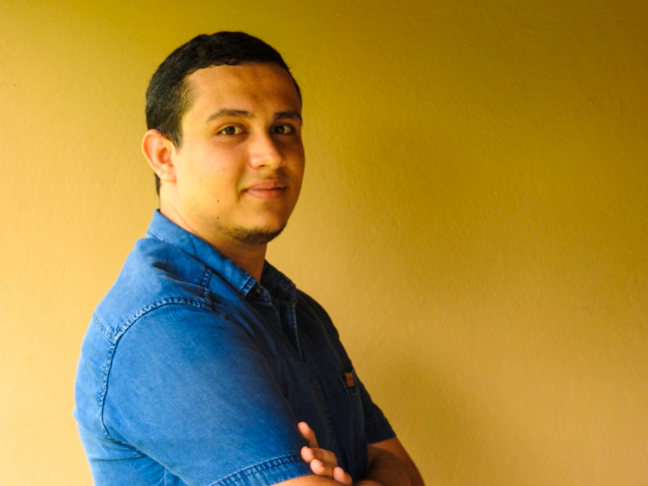

CV Jose Carlos Rodríguez Arrieta
TEC Computer Engineering Student
Computer Engineering Student with skills in Frontend and Backend development.
Education
Computer Engineering
2013-Currently. Tecnológico de Costa Rica
Degree in Computer Network Technician
2007-2012. CTP Nathaniel Arias Murillo

Professional Experience
Software Developer at 3Dog1
2018-Currently. Colombia
Collaborator at DEVESA at Tecnológico de Costa Rica
2017-2018. Tecnológico de Costa Rica
Collaborator at the Computer School at Tecnológico de Costa Rica
2017-2017. Tecnológico de Costa Rica
Technical support at Almacenes el Colono
2012-2012. Almacenes el Colono
Volunteer activities
Member and coordinator of the IntegraTEC group
2016-2018. Tecnológico de Costa Rica
Edecan at San Carlos Technology Summit
2014 and 2017. Tecnológico de Costa Rica
Academic activities
President of the Computer Engineering Students Association
2014-2017. Tecnológico de Costa Rica
Co-founder and Coordinator of Academic Student Partner
2016-2017. Tecnológico de Costa Rica, Training students on new programming technologies
Knowledge and skills
Pro active, punctual, respectful, responsible, honest, with ability to work in teams and under pressure, with ability to adapt quickly
Programming languages
Php, Ruby, JavaScript, Python, c/c++, Java, C#, Arduino, NodeJS
Databases
MYSQL, sqlite3, MongoDB
Frameworks
Laravel, Bootstrap, Materialize, Rails, Jquery, Angular, React, SailsJS, VueJS
Control Versions
Git, Github, Gitlab
Others
Linux
Idioms
Spanish
Native language
English
Intermediate - 80%
References and Contact
Ing. Johan Sánchez Gonzáles
Systems analyst. TicoFrut SA
Email: frst008@gmail.com
Cell phone: 8466-0150
Office phone: 2461-9444 ext 1055
Noidy Iliana Salazar Arrieta
Lcda in Psychology
Msc in Psychopedagogy
Director at DEVESA
Email: nsalazar@itcr.ac.cr
Cell phone: 8332-8208
Office phone: 2401-3097
Jose Carlos Rodríguez Arrieta
Email: josecar366@gmail.com
Cell phone: 8528-2245
LinkedIn
Some proyects I was working on my own
Frontend
Change your avatar